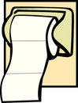

|
|
|
Sponsored Link •
|
Summary
If there is a topic which is likely to engender a flame war between Schemers and Lispers, that topic is hygienic macros. It is the time to face it, and to explain what people mean when they allude to the "hygiene problem".
|
Advertisement
|
In episode 9 I noted that Scheme provides three major macro systems (syntax-rules, syntax-case and define-macro), yet I went on to discuss my own personal macro system, sweet-macros. The decision was motivated by various reasons. First of all, I did not want to confuse my readers by describing too many macro systems at the same time. Secondly, I wanted to make macros easier and more debuggable. Finally, sweet-macros are slightly more powerful than the other macro systems, with a better support for guarded patterns and with a few extensibility features which I have not shown yet (but I like to keep some trick under my sleeve ;).
After 19 episodes about macros, I can safely assume that my readers are not beginners anymore. It is time to have a look at the larger Scheme world and to compare/contrast sweet-macros with the other macro systems. I do not want to discuss all the macro systems in existence here, therefore I will skip a few interesting systems such as syntactic closures and explicit renaming macros. However, readers interested in alternative macro systems for Scheme should have a look at this excellent post by Alex Shinn which summarizes the current situation better than I could do. Notice that Alex is strongly biased against syntax-case and very much in favor of explicit renaming macros. The two systems are not incompatible though, and actually Larceny provides a syntax-case implementation built on top of explicit renaming macros (see also SRFI-72).
syntax-rules can be quite trivially defined in terms of syntax-match:
(def-syntax (syntax-rules (literal ...) (patt templ) ...) #'(syntax-match (literal ...) (sub patt #'templ) ...))
As you see, the main difference between syntax-rules (apart for a missing sub) is that syntax-rules automatically adds the syntax-quote #' operator to you templates. That means that you cannot use quasisyntax tricks and that syntax-rules is strictly less powerful than syntax-match. The other difference is that syntax-rules macros do not have guarded patterns; the most direct consequence is that providing good error messages for incorrect syntax is more difficult. You may learn everything you ever wanted to know about syntax-rules in the Syntax-Rules Primer for the Mildly Insane by Al Petrofsky.
In principle, syntax-case could be defined in terms of syntax-match as follows:
(def-syntax syntax-case
(syntax-match ()
(sub (syntax-case x (literal ...) (patt guard skel) ...)
#'(syntax-match x (literal ...) (sub patt skel guard) ...))
(sub (syntax-case x (literal ...) (patt skel) ...)
#'(syntax-match x (literal ...) (sub patt skel) ...))
))
In reality, syntax-case is a Scheme primitive and syntax-match is defined on top of it. So, syntax-case has theoretically the same power as syntax-match, but in practice syntax-match is more convenient to use.
The major syntactic difference is the position of the guard, which in syntax-case is positioned before the skeleton, whereas in syntax-match is positioned after the skeleton I did spent a lot of time thinking about the right position for the guard: I hate gratuitous breaking, but I convinced myself that the position of the guard in syntax-case is really broken, so I had to fix the issue. The problem with syntax-case is that while the pattern is always in the first position, you never know what is in the second position: it could be the guard or the template; in order to distinguish the possibilities you have to check if there is a third expression in the clause and that is annoying,
In syntax-match the template is always in the second position; if there is something in the third position, it is always a guard; moreover, there could be another expression in the clause (in the fourth position) which is used as alternative template if the guard is not satisfied. The advantage of having fixed positions is that it is easier to write higher order macros expanding to syntax-match transformers (syntax-match itself is implemented in terms of syntax-case where the template are not in fixed position and I had to make the implementation more complex just to cope with that).
You may learn (nearly) everything there is to know about syntax-case in the the book The Scheme Programming Language by Kent Dybvig.
Nowadays macros based on define-macro are much less used than in past because macro systems based on pattern matching are much more powerful, easier and safer to use. The R6RS specification made syntax-case enter in the standard and it is the preferred macro system for most implementation.
Nowadays, there is a good chance that your Scheme implementation does not provide define-macro out of the box, therefore you need to implement it in term of syntax-case (or syntax-match). Here is an example of such an implementation:
(def-syntax define-macro
(syntax-match ()
(sub (define-macro (name . params) body1 body2 ...)
#'(define-macro name (lambda params body1 body2 ...)))
(sub (define-macro name expander)
#'(def-syntax (name . args)
(datum->syntax #'name (apply expander (syntax->datum #'args)))))
))
The code should be clear: the arguments of the macro are converted into a regular list which is then transformed with the expander, and converted back into a syntax object in the context of the macro. define-macro macros are based on simple list manipulations and are very easy to explain and to understand: unfortunately, they are affected by the hygiene problem.
You can find examples of use of define-macro in many references; I learned it from Teach Yourself Scheme in Fixnum Days by Dorai Sitaram.
If you have experience in Common Lisp or other Lisp dialects, you will have heard about the problem of hygiene in macros, a.k.a. the problem of variable capture. As Paul Graham puts it, errors caused by variable capture are rare, but what they lack in frequency they make up in viciousness. The hygiene problem is the main reason why define-macro is becoming less and less used in the Scheme world. PLT Scheme has being deprecating it for years and nowadays even Chicken Scheme, which traditionally used define-macro, has removed it from the core, by using hygienic macros instead: this is the reason why the current Chicken (Chicken 4) is called "hygienic Chicken".
You can find good discussions of the hygiene problem in Common Lisp in many places; I am familiar with Paul Graham's book On Lisp which I definitively recommend: chapter 9 on variable capture has influenced this section. Another good reference is the chapter about syntax-case - by Kent Dybvig - in the book Beautiful Code. Here I will give just a short example exhibiting the problem, for the sake of the readers unfamiliar with it.
Consider this "dirty" definition of the for loop:
(define-macro (dirty-for i i1 i2 . body)
`(let ((start ,i1) (stop ,i2))
(let loop ((,i start))
(unless (>= ,i stop) ,@body (loop (+ 1 ,i))))))
Superficially define-macro looks quite similar to def-syntax, except that in the macro body you need to a add a comma in front of each macro argument argument. Internally, however, macros based on define-macro are completely different. In particular, they are not safe under variable capture and that may cause surprises. For instance, code such as
> (let ((start 42)) (dirty-for i 1 3 (display start) (newline))) 1 1
prints the number 1 (twice) and not the number 42!
The reason is clear if you expand the macro (notice the if you implement define-macro in terms of syntax-match then syntax-expand still works):
> (syntax-expand (dirty-for i 1 3 (display start) (newline)))
(let ((start 1) (stop 3))
(let loop ((i start))
(unless (>= i stop) (display start) (newline)
(loop (+ 1 i)))))
Since the inner variable start is shadowing the outer variable start, the number 1 is printed instead of the number 42. The problem can be solved by introducing unique identifiers in the macro by means of gensym (gensym is not in the R6RS standard, but in practice every Scheme implementation has it; for convenience I have included it in my (aps compat) compatibility library).
The dirty-for macro can be improved to use gensym for every variable which is internally defined (and it is not a macro argument):
(define-macro (less-dirty-for i i1 i2 . body)
(let ((start (gensym)) (stop (gensym)) (loop (gensym)))
`(let ((,start ,i1) (,stop ,i2))
(let ,loop ((,i ,start))
(unless (>= ,i ,stop) ,@body (,loop (+ 1 ,i)))))))
> (let ((start 42)) (less-dirty-for i 1 3 (display start) (newline))) 42 42
less-dirty-for works because all internal variables have now unique names that cannot collide with existing identifiers by construction. You can see the names used internally by invoking syntax-expand (notice that by construction such names change every time you expand the macro):
> (syntax-expand (less-dirty-for i 1 3 (display i))); in Ikarus
(let ((#{g0 |K!ZoUGmIIl%SrMfI|} 1) (#{g1 |qecoGeEAOv0R8$%0|} 3))
(let #{g2 |kD?xfov61j0$G1=M|} ((i #{g0 |K!ZoUGmIIl%SrMfI|}))
(unless (>= i #{g1 |qecoGeEAOv0R8$%0|}) (display i)
(#{g2 |kD?xfov61j0$G1=M|} (+ 1 i)))))
Unfortunately less-dirty-for is not really clean. gensym cannot do anything to solve the free-symbol capture problem (I am using Paul Graham's terminology here).
The problem is that identifiers used (but not defined) in the macro have the scope of expanded code, not the scope of the original macro: in particular, if the outer scope in expanded code redefines the meaning of an identifier used internally, the macro will not work as you would expect. Consider for instance the following expression:
> (let ((unless 'unless)) (less-dirty-for i 1 3 (display i)))
If you try to run this, your system will go into an infinite loop!
The problem here is that shadowing unless in the outer scope affects the inner working of the macro (I leave as an exercise to understand what exactly is going on). As you can easily see, this kind of problem is pretty tricky to debug: in practice, it means that the macro user is forced to know all the identifiers that are used internally by the macro.
On the other hand, if you use hygienic macros, all the subtle problems I described before simply disappear and you can write a clean for loop just as it should be written:
(def-syntax (clean-for i i1 i2 body1 body2 ...)
#'(let ((start i1) (stop i2))
(let loop ((i start))
(unless (>= i stop) body1 body2 ... (loop (+ 1 i))))))
Everything works fine with this definition, and the macro looks even better, with less commas and splices ;-)
That's all for today. The next episode will discuss how to break hygiene on purpose, don't miss it!
Have an opinion? Readers have already posted 2 comments about this weblog entry. Why not add yours?
If you'd like to be notified whenever Michele Simionato adds a new entry to his weblog, subscribe to his RSS feed.
 | Michele Simionato started his career as a Theoretical Physicist, working in Italy, France and the U.S. He turned to programming in 2003; since then he has been working professionally as a Python developer and now he lives in Milan, Italy. Michele is well known in the Python community for his posts in the newsgroup(s), his articles and his Open Source libraries and recipes. His interests include object oriented programming, functional programming, and in general programming metodologies that enable us to manage the complexity of modern software developement. |
|
Sponsored Links
|